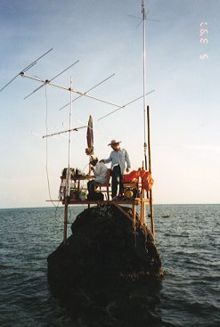
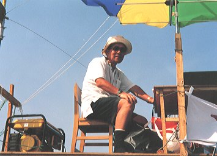
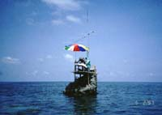

1997 BS7H (Scarborough Reef) DXペディション

【BS7H運用報告(1)】4月30日から始まった、BS7H（スカボロー・リーフ）からの運用は、当初の予定5月6日より3日早い、5月3日で終了しました。QSOを期待しワッチされていた各局はもとより、運用する側としても残念な結果となりました。 今回は船の提供者である中国政府からの緊急の帰国指示によるものでした。 DX-Pediではどのような不測の事態が 発生するか予測は難しいものです。 DX-pediの“鉄則”である「なるべく早くQSOする事」が今回もそのまま当てはまってしまいました。 6mでは、これに「バンドコンデション」が加わりますので、より困難度が加わる訳で、改めて「50MHz」の難しさ を思い知らされたDX-Pediでした。 幸い前半のスタート時は、HFのコンデションは良好で、予定していた米国東海岸地区とのQSOも予想以上の 成果を上げる事ができました。 QSO数も13,154局と、1995年の85時間、12,000局余を上回る記録を残しました。 今回のDX-Pedi運用期間中の各局のご声援、御協力を参加メンバーの一人として心から感謝します。
【JA1RJU 小笠原 一夫】
◎BS7H運用に関する情報は「BS7H 1997 HOME PAGE」（英語版）もご覧ください。
 6mとサテライト運用が行われた #1 Rock 【50MHzの運用結果】50MHzの結果は、結論から言いますと3カントリー、10(6局)QSOでした。 BS7Hからの初QSOはフィリピンの N7ET/DU7で、JA向けのビームで呼んできました。JAとの初QSOはJR6HIで、この時点でBS7Hの信号は、沖縄にRST-559で届いていた様です。 終わって見れば、運用期間中のJAとのQSOはやはり沖縄止まりでした。 距離的にはワンホップのEｓによる伝搬 と思われますが、信号のピーク時(5月3日）にはRS-59と強力でした。 この日ワッチしていた沖縄の局は楽に出来たものと思われます。 予定通り6日まで運用出来ていれば、また異なる結果が出ていたものと思われますが、またのチャンスを楽し みにしましょう。 ◎5月2日にJA6(JR6?)から一度コールされましたが、MS伝搬状の短い入感でした。 尚、6mは、10:00z (19:00JST）のメンバー交代以降の夜間帯には運用していません。 BS7Hからの運用は、5月3日の#1 Rockの06:46z(15:46JST)を最後に終了しています。
 #1 RockでBS7Hを運用するJA1RJU 【BS7H/MM】
BS7H/MMでは、4月28日（06:41～11:06Z）に香港の次の13 QSOでした。
VR2GY SSB
VR2GY CW
VS97IL SSB
VR97IL SSB
VR97LC SSB
VR97AF SSB
VR97XRW SSB
VS6XVB SSB
VS97XMT SSB
VR2ZHH SSB
VS97XMT SSB
VS97BA SSB
VS97LC CW
【BS7H サテライト運用】BS7Hによるサテライト運用は、ロシアの衛星（RS衛星）を使いQRVしました。RS-12/13のTモード（アップリンク＝21.210～21.250MHz、ダウンリンク＝145.910～145.950MHz） を使いましたが、AO-10などに比べ、利用出来る時間（ウインドウ）が短い事と、時間的に早朝と夕方の 運用者の交代時間と重るなどで、運用のチャンスは5月2日のオービット#31287だけになりました。 多くの局に呼んで頂きましたが、短い“ウインドウ”と受信のノイズで、この日ＱＳＯ出来たのは4局だけ でした。 #1 Rockで一人で6mを運用している合間の運用でした。 Rockの周囲は“360度水平線”で、見渡す限り何も遮る もののないロケーションのため、145MHz帯のダウンリンクの信号は強力でした。 ただし、最初自分のダウンリンクが確認出来ず手間取りましたが、両耳に別々のヘッドホンを当てて？145MHz帯 で聞こえてくる局を拾うという“苦肉の策”で何とか切り抜けました。

 #1 Rockは幅が狭くなっている(左は1995年の#1 Rock) 【#1 Rockの運用環境】3回目の運用となる今回、6mとサテライトの運用が行われた #1Rockは、前回（1995年）よりRockの大きさ （幅）が減少しており、上の写真でも分かるように、左側半分が無くなっていました。この狭い場所にR5(HF・14～28)、50MHz・4エレ、144MHz・7エレを設置しました。 Rockの上に“畳一枚”程度の“踊り場”を作り、ここに発電機(1400W)と小さなデスクを置き、対角線上に、 HFアンテナと50MHzの4エレを配置。 この状態でも50MHzのアンテナを回すと、HFのR5に触れてしまうといった 状態でした。 畳一枚の広さに発電機とリグが同居する状態なので、HFなどでSSBで交信された方は、発電機のノイズがマイク を通して聞こえていたのではないかと思います。 いずれにしても、ヘッドホンを使わないと、騒音で受信音が聞き取れない最悪の環境でした。 心配していたRigの発熱問題は、晴天にも関わらず終日かなりの強い風が吹いていたのが幸いして、日中はパラ ソルで直射日光を遮れば問題がない事が判りました。 これにより、50MHzではFT-920をフルに使う事が出来ました。 ただ、電波の回り込みでキーヤーが誤動作して、自動送信によるCQが不能になってしまいました。 HF帯でもアンテナのマッチングが悪く、21MHz帯を除きフルパワーで送信出来なくなるという状態でした。 今回はこの#1 Rockと#2 Rockの2個所で、終夜の運用が行われました。 #1 Rockの夜間のオペレーターは 中国のメンバーが担当した関係で、50MHzとサテライトの運用は行われませんでした。 50MHzのオープンの可能性のある午前中から夕方にかけて、私(JA1RJU)が“手動”でCQを送信し続けました。 【BS7Hの運用結果】運用開始は#2 Rockの4月30日04:49z、終了は#1 Rockの5月3日06:46zで、総運用時間は73時間57分でした。総QSO数は13,154局。 【BS7Hの最終日程】
4月27日BS7Hのメンバー全員乗船。
4月28日午前9時、広州(Guangzhou)を出港。
4月30日早朝スカボローリーフに到着。
同日午後、#2 Rockから第一声（04:49z）。 #1 Rockも運用開始。
5月 1日 #3 Rockの運用開始。
5月 2日 3個所のRockから終日運用。
5月 3日 午後（06:46z）#1 Rockの運用を最後に終了。 夕方、スカボローリーフを出発。
5月 6日 午後2時過ぎ、広州に帰港。 中国のメンバー解散。
5月 7日 JA1BK,N7NG,W6EU,W6RGGが香港経由で帰国。
5月 9日 JA1RJU北京経由で帰国。

 米国・日本・中国から参加したBS7Hのメンバー 左からN7NG.JA1BK.W6RGG.W6EU.JA1RJU＝BA4RC.BA1DU.BA1OK.BG7KW.BD7JG.BD4RX BS7H 1997 QSL Information
For Japan(JA局) For all other areas
Kan Mizoguchi, JA1BK John Parrott, W4FRU
Sakuragaoka 4-5-3 PO Box 5127
Tama City,Tokyo 206 Japan Suffolk VA 23435
U.S.A.
◎ BS7H/MMのQSLはW6RGGが発行する。
Robert B.Vallio
18655 Sheffield Rd
Castro Valley,CA 94546
|

 BS7H 1997 Home Page
BS7H 1997 Home Page